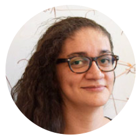
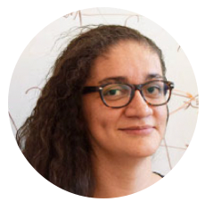

CS 6501-003: Deep Learning for Visual Recognition
 

Instructor: Vicente Ordóñez-Román (vicente at virginia.edu). Office Hours: Tuesdays 3 to 5pm (Rice 310)
Teaching Assistant: Ziyan Yang (zy3cx at virginia.edu) -- Hours: Thursdays 3pm to 5pm (Rice 442)
Teaching Assistant: Paola Cascante-Bonilla (pc9za at virginia.edu) -- Office Hours: Fridays 2 to 4pm (Rice 442)
Class Time: Mondays & Wednesdays between 3:30PM and 4:45PM, at Olsson Hall 005.
Discussion Forum: Piazza
Course Description: How can we use computers to recognize objects, people, actions, animals, places, etc from images? This seemingly trivial task that people perform without much effort has remained one of the core problems in Computer Vision. Recent advances in representation learning using multiple layers of abstraction (deep learning) have demonstrated to be an important aspect for designing artificial systems for visual recognition. In this class we will study, conceive, and implement deep learning models and learning algorithms for computational visual recognition. After this class you will be able to understand, design, implement, and assess the impact of deep learning techniques for a diverse range of visual recognition tasks.
Learning Objectives: (a) Develop intuitions between aspects in human vision and computer vision, (b) Understanding foundational concepts for representation learning using neural networks, (c) Become familiar with state-of-the-art models for tasks such as image classification, object detection, image segmentation, scene recognition, etc, and (d) Obtain practical experience in the implementation of visual recognition models using deep learning.
Prerrequisites: This course requires no previous background in computer vision or machine learning but knowledge in either of those will be helpful. You need to know about matrices, calculating derivatives, and probabilities (bayes rule). You will also need to be at least a moderately proficient programmer in python. There will be several lab assignments. These assignments will show you the basics of modern general visual recognition algorithms and models, and will give you the tools for implementing more advanced ones. Finally, we will have a class project where you will be able to work on something beyond your assignments and where you will have more freedom to pursue a focused problem that is of your interest and better matches your background. Finally we will be using python/pytorch in the lecture notes, so being proficient in Python by completing a few projects in this language before the class starts is helpful. You should install python, jupyter, and pytorch, and complete the following notebook [pytorch_tensors].
Syllabus
| Date | Topic | ||
| Mon, January 13th | Introduction to Visual Recognition [pptx] [pdf] + Primer on Image Processing [link] | ||
| Assignment on Image Processing and Manipulation [Colab]. Due January 26th 5pm EST. | |||
| Wed, January 15th | Image Processing and Image Manipulations [pptx] [pdf] | ||
| Mon, January 20th | MLK Holiday -- no class this day | ||
| Assignment on Image Classification [Colab]. Due February 3rd 11:59pm EST. | |||
| Wed, January 22nd | Softmax Classifier + Stochastic Gradient Descent [pptx] [pdf] | ||
| Mon, January 27th | Shallow Image Features and the Bag of Features model [pptx] [pdf] | ||
| Assignment on Deep Learning Basics [Colab]. Due February 10th 11:59pm EST. | |||
| Wed, January 29th | Neural Networks and the Multi-layer Perceptron Model [pptx] [pdf] | ||
| Mon, February 3rd | Convolutional Neural Networks (CNNs) [pptx] [pdf] | ||
| Assignment on Convolutional Neural Networks [Colab]. Due February 24th 11:59pm EST. | |||
| Wed, February 5th |
Speaker: Dr. Catherine Schuman (Oak Ridge National Laboratory)
Guest Lecture: Neuromorphic Computing More information: Dr. Catherine Schuman works as Research Scientist at the Oak Ridge National Lab (ORNL) in Tennessee in Neuromorphic computing and Spiking Neural Networks. These are models that function in some ways more similarly to processes in the brain and seem to be promising in terms of efficiency. |
||
| Mon, February 10th | Convolutional Neural Network Architectures: LeNet, AlexNet, VGG, GoogLeNet, ResNet [pptx] [pdf] | ||
| Wed, February 12th | Deep Learning-based Object Detection [pptx] [pdf] | ||
| Mon, February 17th | Deep Learning-based Semantic Image Segmentation [pptx] [pdf] | ||
| Wed, February 19th | Generative Adversarial Networks (GANs) [pptx] [pdf] | ||
| Mon, February 24th |
Paper Review: CNNs as Features for Transfer Learning
|
||
| Wed, February 26th | Recurrent Neural Networks (RNNs) | ||
| Mon, March 2nd | Paper Review: Face Recognition and Pose Estimation | ||
| Wed, March 4th | Paper Review: Recent Methods for Object Detection and Instance Segmentation. | ||
| Mon, March 9th | Spring recess -- no class this day | ||
| Wed, March 11th | Spring recess -- no class this day | ||
| Mon, March 16th | Paper Review: Interpreting and Explaining Deep Neural Networks
|
||
| Wed, March 18th | Paper Review: Image to Text: Image Captioning
|
||
| Mon, March 23rd | Paper Review: Structured Prediction with Partial Labels | ||
| Wed, March 25th | Paper Review: Efficient CNN Architectures
|
||
| Mon, March 30th | Paper Review: Conditional Generative Adversarial Networks (GANs)
|
||
| Wed, April 1st |
Paper Review: Avoiding Visual Bias in Computer Vision
|
||
| Mon, April 6th | Paper Review: Video Recognition | ||
| Wed, April 8th | Paper Review: Transformer Networks
|
||
| Mon, April 13th | Paper Review: Self-supervised Learning | ||
| Wed, April 15th | Paper Review: Colorization and Super-resolution
|
||
| Mon, April 20th | Paper Review: Neural Architecture Design and Search | ||
| Wed, April 22nd | Course Recap and What's Next? | ||
| Mon, April 27th | Final Project Poster Presentation | ||
Disclaimer: The professor reserves to right to make changes to the syllabus, including assignment due dates. These changes will be announced as early as possible.
Grading: Assignments: 400pts (4 assignments: 100pts + 100pts + 100pts + 100pts), Class Project: 400pts, Reading Summaries: 100pts, Class Presentation: 100pts. Letter grades to be decided as follows: A+ (1000pts), A (930pts), A- (900pts), B+ (870pts), B (830pts), B- (800pts), C+ (770pts), C (730pts), C- (700pts), D+ (670pts), D (630pts), D- (600pts).
Late Submission Policy: No late assignments will be accepted in this class. Unless the student has procured special accommodations for this class.
Academic Integrity Statement: "The School of Engineering and Applied Science relies upon and cherishes its community of trust. We firmly endorse, uphold, and embrace the University’s Honor principle that students will not lie, cheat, or steal, nor shall they tolerate those who do. We recognize that even one honor infraction can destroy an exemplary reputation that has taken years to build. Acting in a manner consistent with the principles of honor will benefit every member of the community both while enrolled in the Engineering School and in the future. Students are expected to be familiar with the university honor code, including the section on academic fraud."
Accessibility Statement: "The University of Virginia strives to provide accessibility to all students. If you require an accommodation to fully access this course, please contact the Student Disability Access Center (SDAC) at (434) 243-5180 or sdac@virginia.edu. If you are unsure if you require an accommodation, or to learn more about their services, you may contact the SDAC at the number above or by visiting their website at https://www.studenthealth.virginia.edu/student-disability-access-center/about-sdac."
Other similar courses or courses with useful related material:
- Introduction to Deep Learning (Joseph Redmon and Ali Farhadi, University of Washington)
- Deep Learning for Perception (Dhruv Batra, Virginia Tech)
- Visual Recognition (Yong Jae Lee, UC Davis)
- Introduction to Computer Vision (James Hays, Brown University / Georgia Tech)
- Convolutional Neural Networks for Visual Recognition (Fei-fei Li, Andrej Karpathy and Justin Johnson, Stanford University)
- Machine Learning (Nando de Freitas, University of Oxford)
- Visual Recognition (Adriana Kovashka, University of Pittsburgh)
- Multimodal Learning with Vision, Language and Sound (Leonid Sigal, University of British Columbia)
- Recognizing People, Objects and Actions (Tamara L. Berg, UNC Chapel Hill)